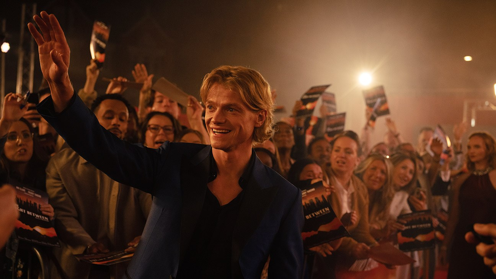
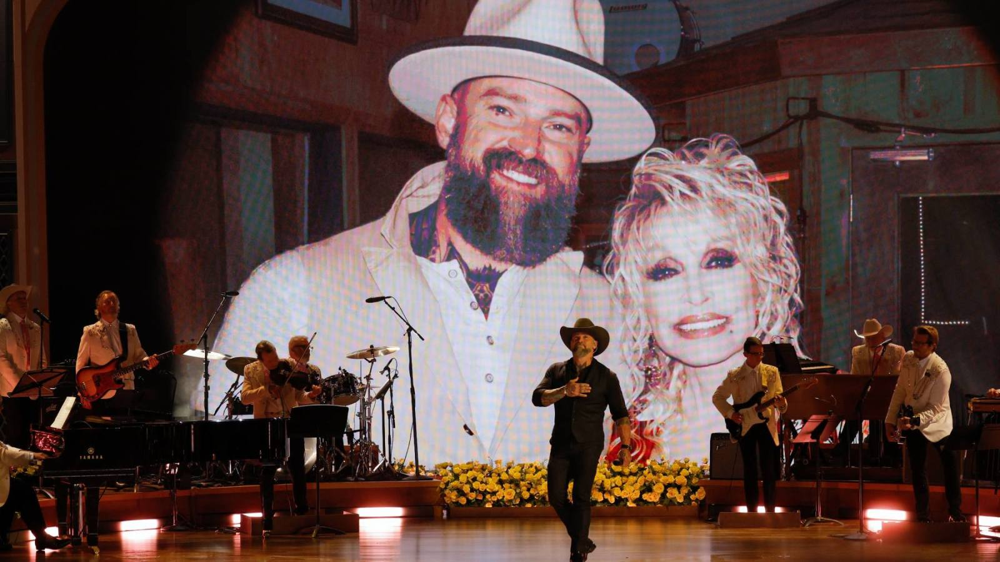
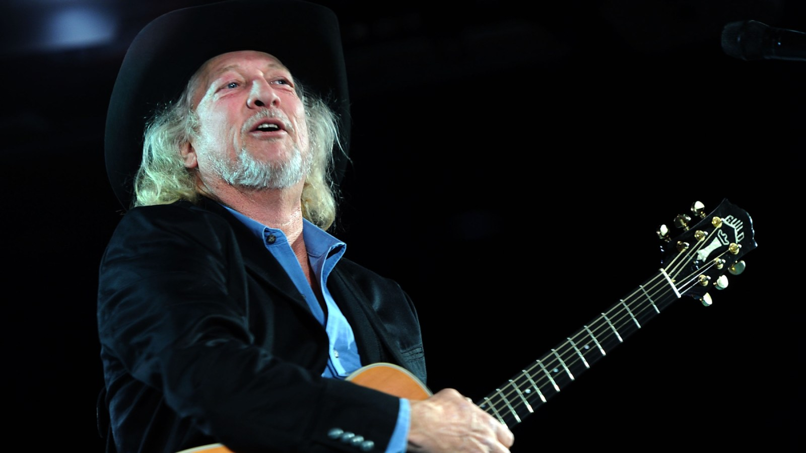
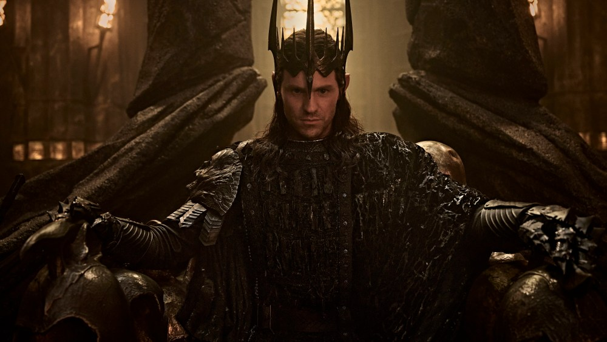

The first Clayface reviews are in, and critics call DC’s body-horror swing a surprise

Reviews for James Watkins’ Clayface landed Wednesday, and they’re mostly positive. The film sat in the mid-70s on Rotten Tomatoes as reviews rolled in, well above the 52% DC’s last movie, Supergirl, ended up with. Tom Rhys Harries plays Matt Hagen, a rising Gotham actor whose face is wrecked by a crime boss and who becomes a shapeshifter after an experimental procedure. Variety’s Guy Lodge said it “exceeds expectations” in nearly every department, and The Hollywood Reporter called it “one of the year’s big surprises.”
Not everyone is sold. IndieWire said it “confounds much more than it compels,” and several critics knocked the script and dialogue while praising Harries and the practical effects. It’s the third DC Universe film after Superman and Supergirl, and it opens Friday, with Box Office Theory forecasting a $15–23 million debut.
 Clayface trailer on YouTube →
·
Rotten Tomatoes →
·
The Hollywood Reporter →
Clayface trailer on YouTube →
·
Rotten Tomatoes →
·
The Hollywood Reporter →
Zac Brown sings “Butterfly” with Dolly Parton’s voice at the CMA’s tribute to her

CMA Presents I Will Always Love You: A Celebration of Dolly Parton aired live on ABC and Disney+ Wednesday night from Belmont University in Nashville, two months after Parton died in August at 80. The moment people are sharing most: Zac Brown performing “Butterfly,” their 2025 duet, with Parton’s recorded vocals joining him on the chorus, surrounded by flowers and butterflies.
More than 20 acts performed, including Reba McEntire, Carrie Underwood, Lainey Wilson, Ella Langley, Vince Gill, Kelsea Ballerini and Katy Perry, while Oprah, Julia Roberts and Sabrina Carpenter sent recorded tributes. Carpenter called Parton “one of the only people on planet Earth that everyone could universally agree on.” Part of the proceeds go to Parton’s Imagination Library, and the special streams on Hulu starting today.
Country Music Hall of Famer John Anderson dies at 71

John Anderson, whose warbling voice powered 1980s No. 1s like “Swingin’,” “Wild and Blue” and “Black Sheep” and a ’90s comeback with “Straight Tequila Night” and “Seminole Wind,” died Wednesday, his family announced. The Florida native came to Nashville as a teenager and once worked construction on the roof of the Grand Ole Opry. He survived a mysterious illness that began in 2016 and took most of his hearing, returned with the 2020 album Years, and entered the Hall of Fame in 2024.
He died just days after attending Sunday’s Hall of Fame ceremony. Tim McGraw wrote that they’d laughed and sung his songs together that night: “There will never be a stylist in music, any music, that was so defining as his.” Blake Shelton and Riley Green also posted tributes.
The Rings of Power Season 3 trailer brings dragons, a Balrog and Sauron with the One Ring

Prime Video released the full Season 3 trailer Wednesday, and it’s the biggest-looking footage the show has put out: Sauron’s orc armies, dragons and Ring-servants sweeping across Middle-earth, and Sauron (Charlie Vickers) finally putting on the One Ring. Simon Pegg voices the Balrog, and Jamie Campbell Bower and Eddie Marsan join the cast.
The season opens with four episodes on Nov. 11, then two on Nov. 18 and the last two on Nov. 25. The logline has Elves holding the front lines, Númenor on the edge of civil war, and Gandalf fighting in the eastern lands of Rhûn.
Bottom of the news
- Lea Michele is returning as Rachel Berry in Disney+ and Hulu’s Glee revival, per Variety, and Heather Morris and Chord Overstreet hinted they’re back too.
- HBO is developing a Poison Ivy series, with The Penguin showrunner Lauren LeFranc in talks to produce.
- Steven Yeun’s Netflix supernatural drama Pagans cast Logan Kim as his son, the second time Kim has played Yeun’s son after The Walking Dead: Dead City.
- Billy Crystal’s one-man show 860 opened on Broadway at the Imperial Theatre.
- Rajinikanth’s Jailer 2 crossed ₹300 crore in India in its first week, the year’s biggest Tamil film so far.
- L.A. film and TV shoot days fell again last quarter, 36% below the five-year average despite California’s bigger tax credit.
- Fourth Wing author Rebecca Yarros praised Amazon’s casting of Esther McGregor and Emilio Sakraya as Violet and Xaden.